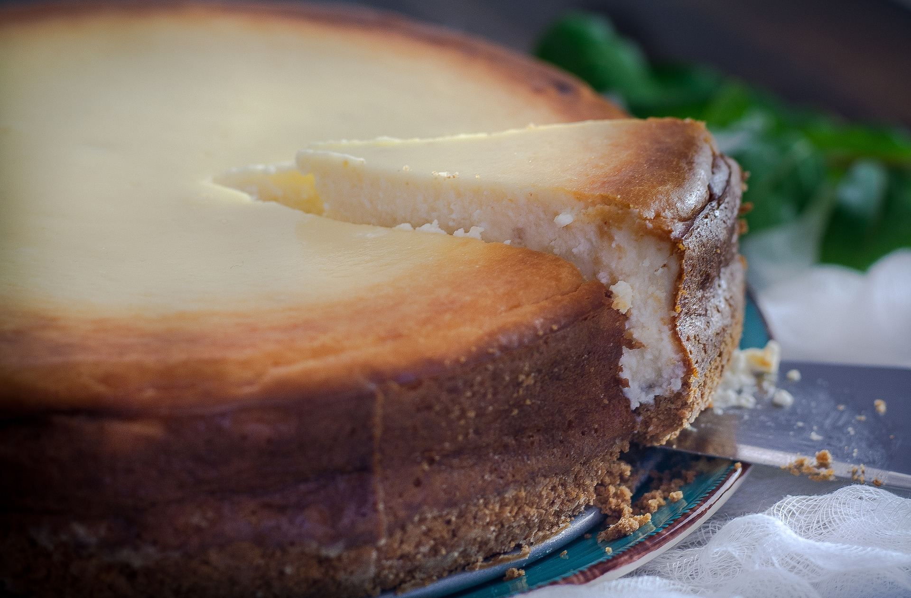

Cheesecake

Description
Cheesecake is a sweet dessert consisting of one or more layers. The main, and thickest, layer consists of a mixture of a soft, fresh cheese (typically cottage cheese, cream cheese or ricotta), eggs, and sugar.
Ingredients
- 1 (18.25 ounce) package vanilla flavored cake mix
- 4 (8 ounce) packages cream cheese
- 4 eggs
- 4 teaspoons vanilla extract
- 1⅓ cups white sugar
- 2 (10 ounce) packages frozen raspberries, thawed
- ½ cup white sugar
- ½ cup kirschwasser
- ½ teaspoon baking soda
- 1 (8 ounce) container frozen whipped topping, thawed
Instructions
- Preheat oven to 350 degrees F (175 degrees C). Grease and flour a 9x13 inch pan.
- Prepare cake mix according to package instructions. Pour into 9x13 inch pan and set aside. In a large bowl, beat cream cheese, eggs, vanilla and 1 1/3 cups sugar until light and fluffy. Carefully spread over cake batter.
- Bake in preheated oven for 1 hour. Allow to cool.
- To make raspberry topping: In the bowl of a food processor or blender, combine the raspberries, 1/2 cup sugar, and 1/2 cup kirschwasser. process until pureed.